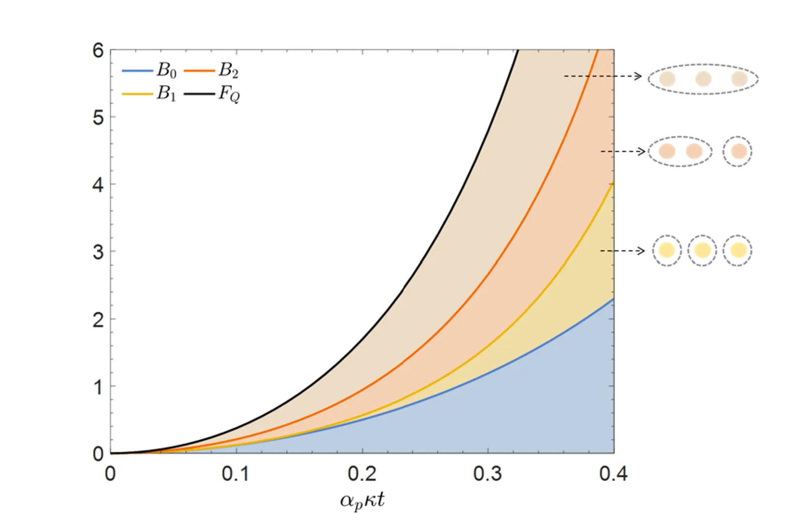
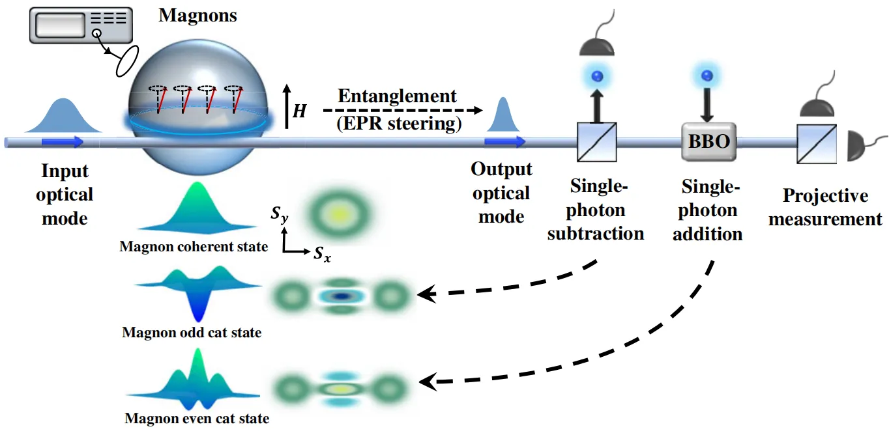
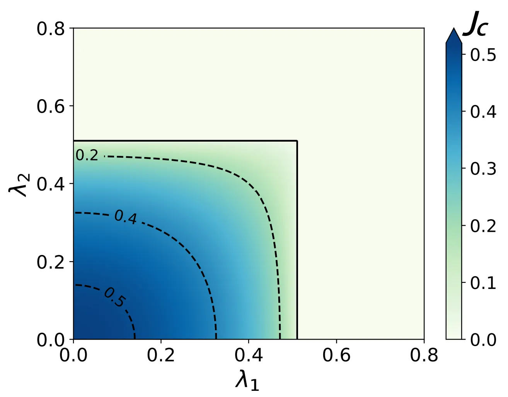
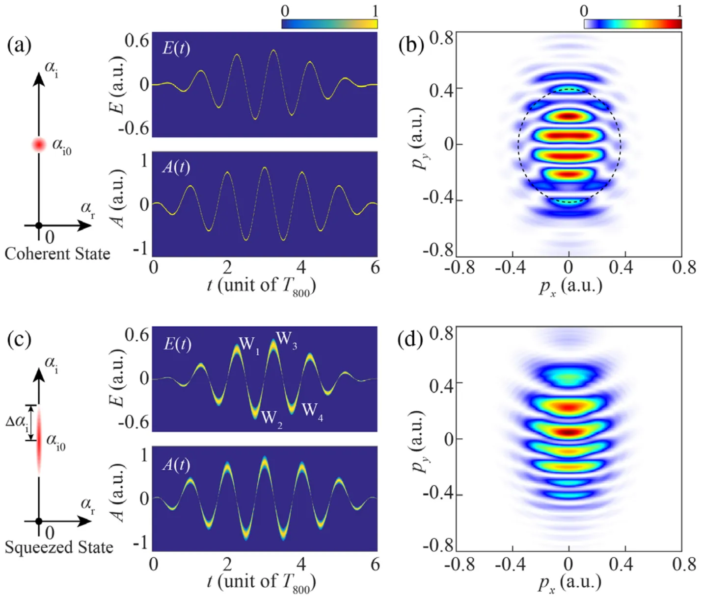
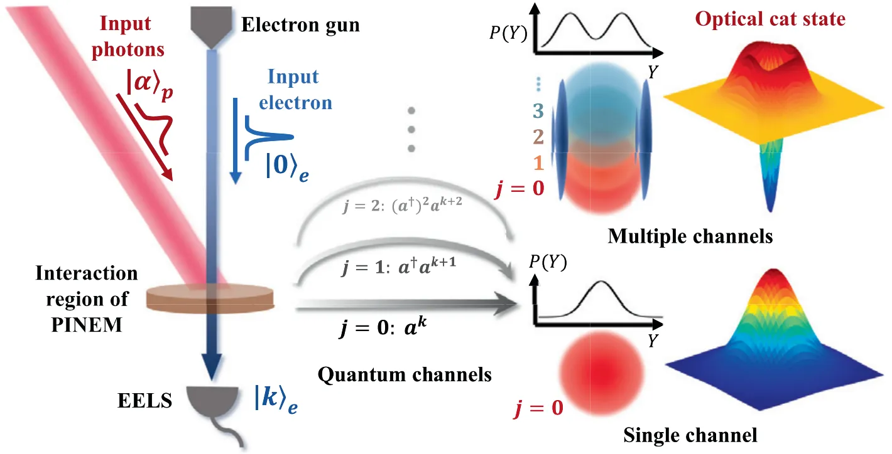

研究领域
研究方向
量子光学与量子信息


量子纠缠是量子信息任务的核心资源。随着连续变量量子系统模式数增加，纠缠结构迅速复杂化，传统检测方法难以高效完成判定与分类；同时，非线性相互作用引入的非高斯特性，也使许多常用纠缠判据失去充分必要性，亟需新的理论框架。围绕这一问题，我们在近期的研究中发展了一系列基于量子Fisher信息和高阶关联矩阵的量子纠缠检测方法，并将其应用于腔光力、腔磁等光与物质耦合系统，合作开发了可实现多模非高斯纠缠判定的神经网络模型。我们进一步提出了基于纠缠的薛定谔猫态远程制备方案，合作完成了该方案的实验验证，展示了其在量子精密测量领域的应用潜力与优势。
量子相变与拓扑特性

研究光与原子的耦合机制，是深入理解光与物质相互作用的重要基础，也为量子相变和拓扑相变的模拟和调控提供了平台。我们围绕Dicke模型、Rabi模型等典型的光与原子耦合系统，结合具有近邻/次近邻相互作用的晶格模型，研究了系统的超辐射量子相变及多稳态性质，揭示了有限温费米气系统中的三临界现象及其与系统维度的关系，并模拟了J1-J2模型中的量子阻挫效应。我们还利用光纤引入格点间的非局域耦合，展示了光信号非互易放大与系统拓扑边界态之间的对应关系，并揭示了非局域耦合诱导的具有分簇局域特性的体模式，为量子相变与拓扑相变的研究提供了新的思路。
超快光场的量子特性


传统强场物理通常将驱动光视为经典光场，而忽略其量子统计效应。随着超快激光技术的发展，驱动光场的量子特性在隧道电离和高次谐波产生等强场物理现象中的作用逐渐显现。围绕这一问题，我们首次揭示了强压缩相干态光场对氢原子阈上电离的调制作用，预言了不同于经典驱动的光电子动量谱，并系统阐释了超快量子光场的聚束/超聚束效应对强场电离的影响机制。同时，我们基于自由电子相互作用对超快光场的调制效应，提出了实现光场薛定谔猫态超快制备的理论方案，为超快量子信息处理和量子精密测量提供了新的理论途径。
科研项目
基于强场电离的量子纠缠度量与应用研究
项目类型：国家自然科学基金面上项目
2025年1月-2028年12月，主持，在研
薛定谔猫态的新型制备、调控及应用研究
项目类型：国家自然科学基金专项项目
2022年1月-2022年12月，主持，结题